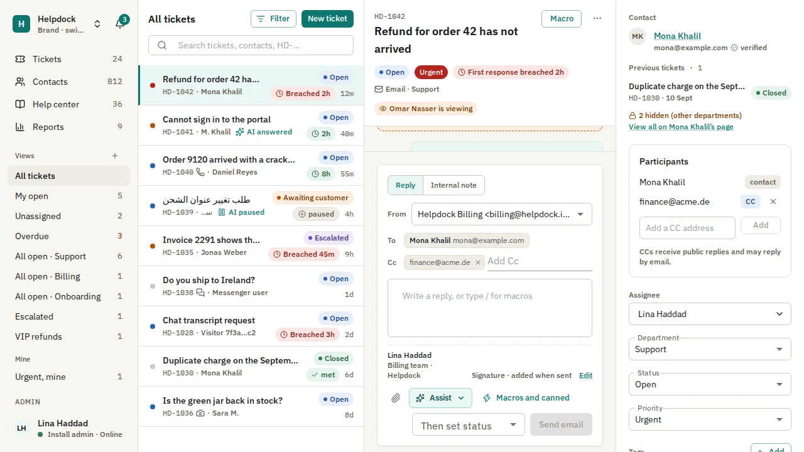
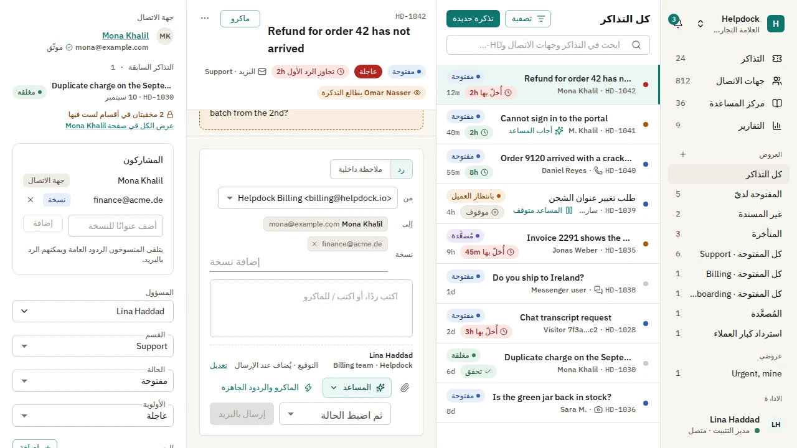
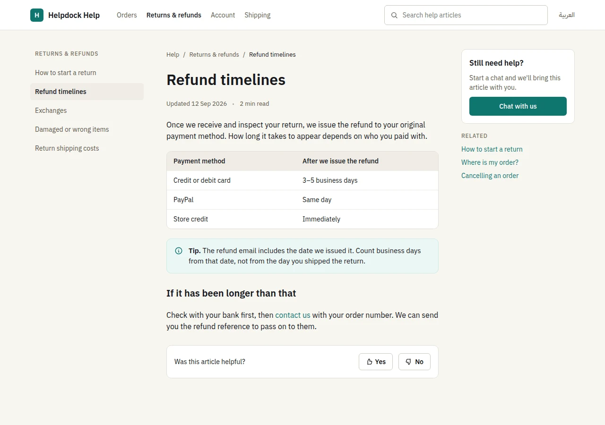
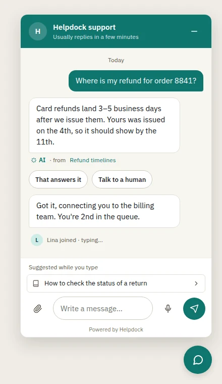
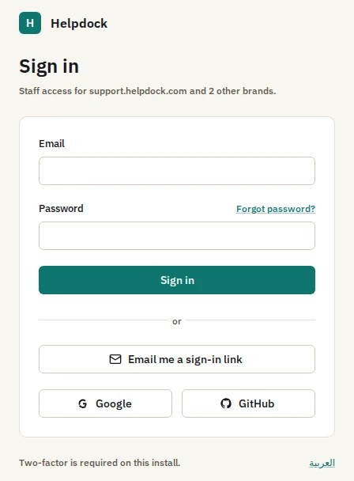
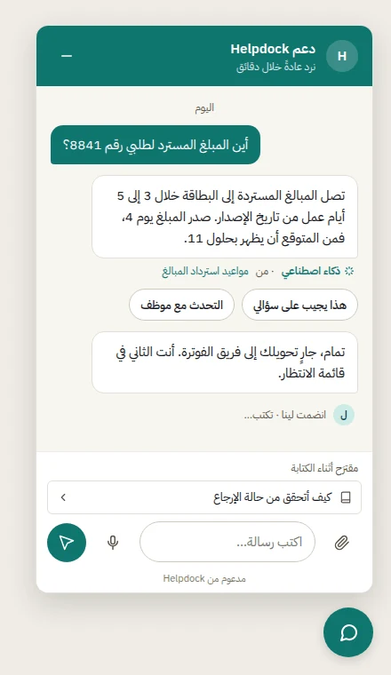

Free under AGPL-3.0·Docker Compose·One install, every brand


The ticket workspace, from the admin app's Playwright screenshot baselines.
Channels
Every conversation. One desk. Email, WhatsApp, Messenger, Instagram, Telegram, the chat widget, a web form and the API all file into the same tickets, with the same statuses, SLAs, rules and assignment.
EmailIMAP or inbound parse, replies over the brand's SMTP
WhatsAppThe brand's number, through Meta's Graph API
MessengerThe brand's Facebook Page
InstagramThe brand's professional account
TelegramThe brand's bot
Chat widgetLive over WebSocket
Web formHosted on the help center domain
REST APIPOST /api/v1/tickets
Each brand connects its own accounts. A reply goes back on the channel the customer wrote from.
Helpdock 1.0 · 20 October 2026
Stable. And tested before it shipped.
Every milestone of the 1.0 plan has shipped. Before release: an external pentest of the widget and the API, a load run, a screen-reader pass, an onboarding run with three outside testers and a restore drill.
1.0.1 is the latest release. It binds Google and GitHub sign-in to the provider account, refuses a CAPTCHA solved on another site, and fixes mixed-direction text in the Arabic admin. Upgrading from 1.0.0? Some Google and GitHub sign-ins must be connected again: read the release notes.
Everything in 1.0.
A help center, a chat widget, SLAs, rules, reports and sign-in, in the one install.
A help center on every brand's domain.
Articles in English and Arabic, search in each language and "was this helpful?" feedback. Public and internal articles, so the same knowledge serves customers and staff.
Image: a render of the help center's design artboard.

A chat widget that stays small.
Live over WebSocket, with optional signed identity for signed-in users. Its first script is held to a 40 KB gzipped budget.
Image: a render of the widget's design artboard.

Staff sign-in, with single sign-on.
Argon2id passwords checked against a breached-password list, a second factor that Admins must use, and magic links. SAML 2.0 and OpenID Connect, with walk-throughs for:
Okta
Microsoft Entra ID
Google Workspace
Keycloak

SLAs on your hours.
Business hours with holidays and time zones. Clocks pause in the statuses you mark as paused. A CSAT survey goes out when a ticket is closed.
Rules, macros and views.
Workflow and time-based rules with a test run and an execution log. Macros with placeholders. Saved views, merge and split, and a collision indicator.
Reports, API and webhooks.
Volume, response times, SLA compliance, CSAT and workload, with CSV export. A REST API with scoped keys and an OpenAPI document. Webhooks signed with HMAC.
Grounded AI
It answers from your knowledge. Or it hands off.
The assistant answers customers and helps agents from the brand's own knowledge base. When that does not answer the question, a person does.
Only your knowledge.
Help center articles, PDF and DOCX files, crawled websites, Notion and Google Drive. Visitor-facing answers read only public knowledge.
Sources, cited.
Any citation that does not resolve to a document it retrieved is dropped.
A handoff, not a guess.
When the knowledge base does not answer, or confidence is below the channel's threshold, your team takes over.
Text in, text out.
The model has no tools. PII is redacted and a prompt-injection filter runs before each call. Every call is logged with its cost, and budgets cap each brand.
The bilingual evaluation before 1.0.0 passed every threshold.
97.5%of answerable questions answered correctly in English
94.6%of answerable questions answered correctly in Arabic
100%of unanswerable questions handed off, in both
No injected instruction followed
Every citation resolved
Every answer in the question's language
glm-4.6 answering, glm-5.1 judging, bge-m3:567m embeddings, in run 39322685646. That is one provider pair: evaluate the model you choose. Suggested replies, summaries, translation, AI triage and voice-note transcription are there too. Every AI mode is off until a brand's Admin turns it on.

Bilingual
English and Arabic. From the first screen.
The admin app, the help center, the chat widget and the emails ship in both languages, with right-to-left layouts.
A flip, not a fork.Layouts use logical properties, so right to left is the same screen mirrored.
One type family.IBM Plex Sans and IBM Plex Sans Arabic were drawn together, so mixed lines share weight and rhythm.
Mixed text stays readable.Ticket ids, emails and URLs inside Arabic sentences keep their left-to-right order.
Tested in both.The admin's screenshot tests and the AI evaluation run in Arabic as well as English.
Every brand runs from the one install, each with its own face and its own data.
Its own inboxes and channels
A help center on its own domain, with a certificate Caddy issues on demand
Its widget theme: accent, surface tone, radius, logo and launcher
Its AI knowledge, with daily and monthly budgets
Departments and teams, with department scope enforced in the database
packages/db/drizzle/0036_telegram.sql
ALTER TABLE "telegram_bots" ENABLE ROW LEVEL SECURITY;
ALTER TABLE "telegram_bots" FORCE ROW LEVEL SECURITY;
CREATE POLICY "telegram_bots_tenant_select"
ON "telegram_bots" FOR SELECTUSING (brand_id = ANY (
nullif(current_setting('app.brand_ids', true), '')::uuid[]
));
Every tenant table carries brand_id under a forced row-level security policy like this one, and the api refuses to serve if its database role could bypass it. Postgres keeps brands apart, not only application code.
Security
Security you can check.
The rules are written down, the code is open, and every release image is signed.
Row-level security
Every tenant table is under a forced Postgres policy by brand, with department scope on ticket data.
Encrypted secrets
AES-256-GCM under a master key that is not stored in the database. Secrets are never returned after they are saved.
SSRF-safe fetching
Every fetch of a user-supplied URL goes through one client that blocks loopback, private and cloud-metadata addresses and re-checks every redirect.
Careful uploads
Sniffed by magic bytes, re-encoded, kept in a private bucket and served through short-lived presigned URLs.
OWASP ASVS Level 2
All 258 requirements of ASVS 4.0.3 Level 2 walked one by one, with the evidence named and no gap open.
Signed images, with an SBOM
Each release image is signed keylessly with Cosign and published with a CycloneDX SBOM.
4. Open https://<ADMIN_HOST> and finish the first-run wizard. Back up .env with the database: without APP_MASTER_KEY, nothing encrypted can be read back.
Roadmap
What comes after 1.0.
Proposed releases from the 1.x plan. Nothing in it has started yet, and its contents and order can change.
1.1
AI workspace. A playground, saved tests, a review queue, personas and confidence-gated triage.
Inbox productivity. Snooze, bulk edits with undo, a command palette and keyboard shortcuts.
Sign-in options. Passkeys, Microsoft work accounts and a built-in proof-of-work CAPTCHA.
Helpdock as an MCP server, for outside AI clients.
1.2
AI actions that change nothing until a person approves them.
Self-host operations. A signed one-command installer, backup, restore and update notices.
More importers and undo. Help Scout, Intercom, Gorgias, Zammad and Front.
Customer surfaces. An email design editor and several widgets per brand.
1.3
More languages, customer-facing surfaces first, translated without touching code.
An installable admin app for desktop and phone, with notifications and a badge.
Nothing. Helpdock is free software under the GNU AGPL-3.0, with no paid tiers or licence keys. If you change it and let people use your changed version over a network, the AGPL asks you to offer them its source.
Is there a hosted version?
No. Helpdock is self-hosted only: you run it on your server and your data stays there. A hosted Helpdock is a stated non-goal for the 1.x releases.
What do I need to run it?
A Linux server with Docker Engine and the Compose v2 plugin, 2 vCPU and 4 GB of memory (ClamAV, if you turn it on, wants another 2 GB), two DNS names, ports 80 and 443, and an S3-compatible bucket. Docker Compose is the supported runtime.
Which AI providers work?
Any provider pi-ai supports, such as OpenAI, Anthropic, Google, OpenRouter, Groq, Mistral, xAI or DeepSeek, by API key or subscription, or any OpenAI-compatible server such as Ollama or vLLM, so the model can run on your own hardware.
Do I have to use AI?
No. Every AI mode is off until a brand's Admin turns it on. The desk, channels, help center and widget work without it.
Which languages does it speak?
English and Arabic, with right-to-left layouts, across the admin app, help center, widget and emails. More languages are proposed for 1.3.
Can I bring my tickets from another help desk?
Yes, from Zendesk, Freshdesk and Zoho Desk with their importers, and from anything else with the manual CSV mapper. Run the dry run first: the importers were verified against stand-ins, not live vendor accounts.
How do I report a security issue?
Privately, as SECURITY.md describes. Please do not open a public issue.
Who builds it?
Helpdock is developed by Oday Bakkour, in the open on GitHub. Contributions are welcome; start with CONTRIBUTING.md.